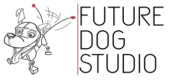

Credits
Created by
Lev Tankelevitch, Cristiana Vagnoni
Directed by
Maria Lia Malandrino
Animation by
Maria Lia Malandrino, Stefania Vincenzi, Luca Passafaro
Sound design and foley by
Federico Malandrino
Music by
Federico Malandrino
Script by
Maria Lia Malandrino, Lev Tankelevitch, Cristiana Vagnoni
Science consultancy by
Lev Tankelevitch, Cristiana Vagnoni
Girl
Cristiana Vagnoni
Narrator
Lev Tankelevitch
Scientist
Sophie Ellermann
Maria Lia Malandrino 
Maria Lia is a 2D/3D animator with a background in graphic design who's passionate about science and figuring out how things work. She has worked in the UK, China, and Italy, and is now based in Turin.
Federico Malandrino
Federico is a producer and composer with a master in sound design. He's the resident audio director at Unidigita, a video production company based in Turin, Italy, and electronic musician with the national collective project Rezophonic.
Lev Tankelevitch
Lev is studying attention and learning as a PhD student in Neuroscience at the University of Oxford. He is passionate about the mergence of science and art through a range of digital and interactive media.
Cristiana Vagnoni
Cristiana is a PhD student at the University of Oxford, studying the biology of brain development. She has a kick for translating science into creative projects that engage and educate the general public.
Future Dog Studio 
Future Dog comes from a long and fruitful collaboration between Stefania Vincenzi and Mauro Gariglio, both accomplished animators in the sector of TV series, feature films, and advertisement production in Italy. After a decade working together on long running TV series "La Pimpa", Stefania and Mauro have decided to branch out and put together their own studio, to face the challenges and the opportunities of new technology and media.
- 2017 -